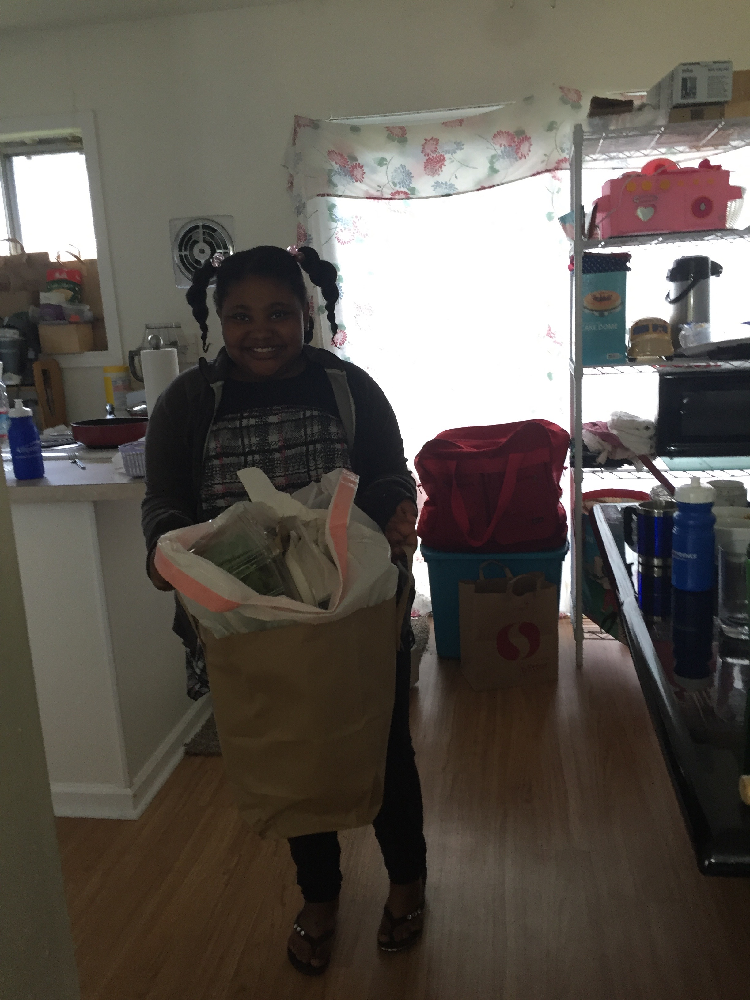

Item 1: Helping a Parent
First, we helped Sheilisa's mom around the house by taking out the trash without being asked!
Item 2: Donating to a Good Cause
Then, Lacey donated some things she didn't need anymore to ARC.
Item 3: Making a nice card for a stranger
Lacey drew this picture with the message, "You are amazing just the way you are," that Sheilisa gave to a nice couple we met at the park.
Item 4: Giving a Stranger a High-Five
Sheilisa surprised the couple with the card AND the high-five!
Item 5: Leaving a nice note on a stranger's car
Sheilisa left a note with lots of amazing and inspiration messages on someone's car as we left the park. She wrote things like, "You're amazing!" and "Be confident!" We're sure it brightened up someone's day!
Item 6: Picking up Trash
Before we left the park, we spent a few minutes picking up as much trash as we could find. We felt better leaving the park cleaner than we found it.
Item 7: Paying for someone else at the drive-through
We went through Dutch Bros. and paid for a man on a motorcycle behind us! You can't see him in the photo very well, but trust us, he was there and very grateful for a cool drink on a warm day!
Item 8: Planting Something
We both love basil, so we went to the garden section of the store and got matching basil plants and pots. We planted the basil in our pots (basil is great for container gardening!), and now Sheilisa and her mom, and Lacey and her husband, will have fresh basil for pizza, pasta and salad all summer!
Item 9: Giving a Free Talk
Lacey gave a talk for Refresh Portland on having an English background and being a software developer. The talk was free and open to the public, and she got to share her experience with other people!
Item 10: Making a Vegetarian Dinner
Lacey and Sheilisa helped the planet in several ways for one outing by making a vegetarian dinner.
Item 11: Sheilisa got an award!
Sheilisa is such a great student and a role model to her class that she was honored at her school's Academic Progress ceremony! This wasn't on the list, but it's the culmination of a school year's worth of hard work on her part. She does kind things for others all year round.